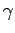

Inhalt Index DeskTop Bronstein

 Numerische Mathematik Approximation, Ausgleichsrechnung, Harmonische Analyse Approximation im Mittel Nichtlineare Quadratmittelaufgaben
Numerische Mathematik Approximation, Ausgleichsrechnung, Harmonische Analyse Approximation im Mittel Nichtlineare Quadratmittelaufgaben


Einen anderen Lösungsweg, der bei praktischen Aufgaben in der Regel gegangen wird, vermittelt das GAUSS-NEWTON-Verfahren, das zur Lösung der nichtlinearen Quadratmittelaufgabe (19.24) beschrieben worden ist. Die Übertragung auf die jetzt vorliegende nichtlineare Approximationsaufgabe (19.186) erfordert die folgenden Schritte:
| (19.187) |
| (19.188) |
mit Hilfe des Normalgleichungssystems
oder nach dem HOUSEHOLDER-Verfahren. In (19.189) sind die Komponenten der Vektoren und durch
gegeben. Die Matrix wird analog zu G in (19.179b) gebildet, indem man  durch
durch
ersetzt.
| (19.191) |
wobei ein Schrittweitenparameter ist.
Durch Wiederholung der Schritte 2 und 3 mit ai(1) an Stelle von ai(0) usw. erhält man für die gesuchten Parameter Folgen von Näherungswerten, deren Konvergenz sehr stark von der Güte der Startnäherung abhängt. Mit Hilfe des Schrittweitenparameters  läßt sich aber zunächst eine Verkleinerung der Fehlerquadratsumme erzielen.